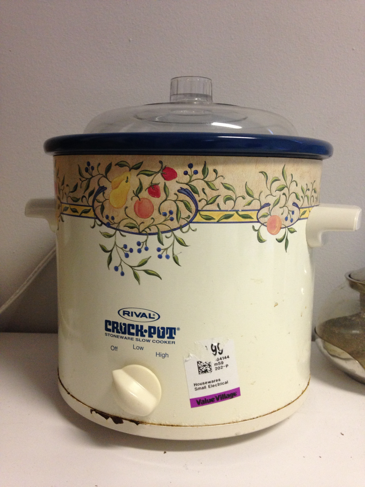

1 Room 27m2 in Linz apartment 165m2 for rent
from June '16
View the Project on GitHub
tituman/tituman
Download
ZIP File
Download
TAR Ball
View On
GitHub
objects to give away:
Slow cooker

Tea pot
Water jug 7.5l
Electric water kettle
Coffee or spices grinder
Glass water jug